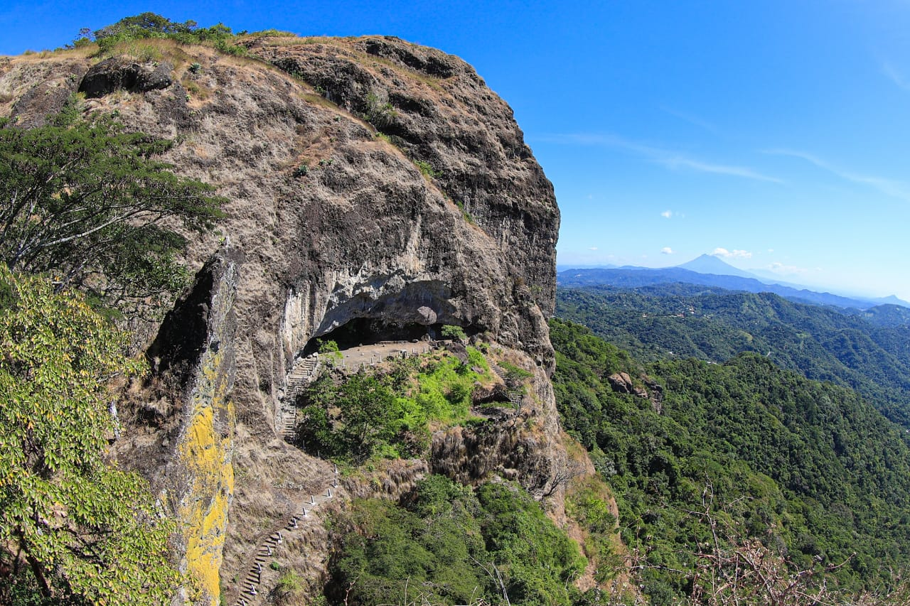
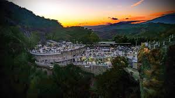

Historia
La Puerta del Diablo es un famoso promontorio rocoso ubicado en el departamento de San Salvador. Su nombre proviene de una leyenda local que dice que antiguamente el diablo aparecía en la roca para tentar a los pobladores. Hoy en día es un sitio turístico reconocido por sus impresionantes vistas panorámicas del Valle de San Salvador.
Ubicación
Se encuentra a solo 14 km al oeste de San Salvador, en las cercanías de la Carretera a Los Planes de Renderos. Es fácilmente accesible desde la capital y ofrece rutas de senderismo hacia la cima de la roca.
¿Por qué es famosa?
- Vistas panorámicas: Ofrece una impresionante vista del Valle de San Salvador y sus alrededores. (El Salvador Travel)
- Roca icónica: Su formación rocosa ha sido inspiración para leyendas y es ideal para fotografía.
- Senderismo: Sus rutas cortas permiten caminar y explorar la zona natural.
Qué hacer en la Puerta del Diablo
- Senderismo: Ascender hasta la cima y disfrutar del paisaje.
- Fotografía: Capturar panorámicas del valle y el atardecer.
- Picnic: Disfrutar de la naturaleza y descansar en áreas seguras.
- Observación de flora y fauna: Explorar la vegetación y aves locales.
Cómo llegar
En vehículo privado:
- Desde San Salvador, toma la Carretera a Los Planes de Renderos.
- Continúa siguiendo las señales hacia la Puerta del Diablo.
En transporte público:
- Desde San Salvador, toma un bus hacia Los Planes de Renderos y luego un transporte local hasta la Puerta del Diablo.
Galería


